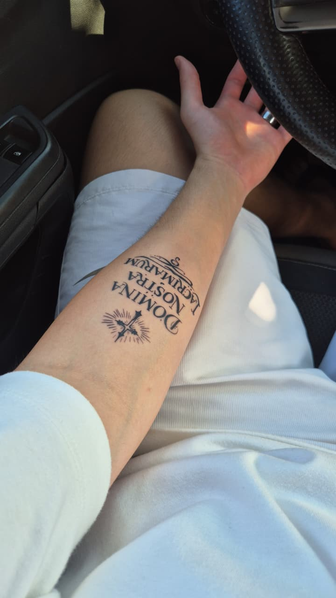
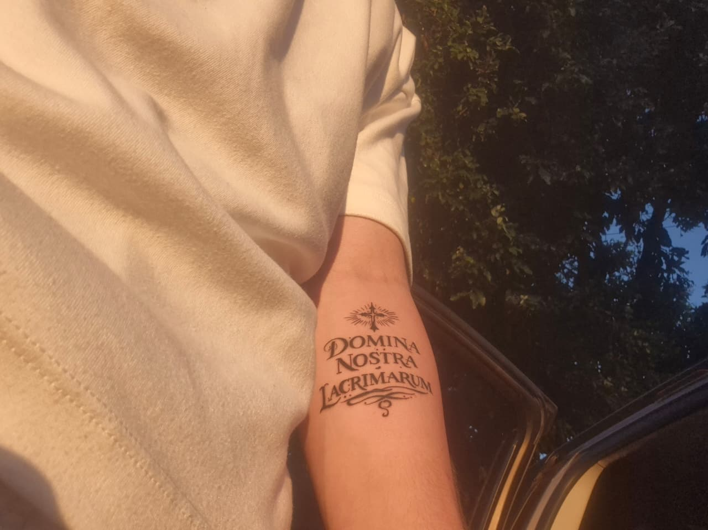

Bom, pra começar, tenho 18 anos, sou estudante de Análise e Desenvolvimento de Sistemas, e estou no meu primeiro semestre. Gosto muito de tecnologia, desde novo e sempre quis trabalhar com isso, desde a infância. Além disso, sou apaixonado por música e adoro tocar violão nas horas vagas, gosto muito de esportes no geral e meu sonho era ser jogador profissional de basquete. Sou Católico Apostólico Romano, seguidor fiel de Jesus Cristo, devoto à Nossa Senhora das Lágrimas. Amo do fundo do meu peito toda a criação de Deus, sempre fui extremamente conectado com a natureza, e acredito que Deus está em todos os lugares, mas visualmente, vejo mais ele quando olho pra sua criação, seja ela pessoas, animais, plantas, rios, mares e etc. Tenho uma tatuagem de Nossa Senhora das Lágrimas escrito em latim "Domina Nostra Lacrimarum" e inclusive, sei rezar bem em latim. Tenho o desejo de tornar as pessoas mais felizes, acredito que isso me faça ser uma pessoa melhor, isso faz bem pra mim. Gostaria de levar a palabvra de Deus por onde Ele quiser me levar junta da minha esposa.

